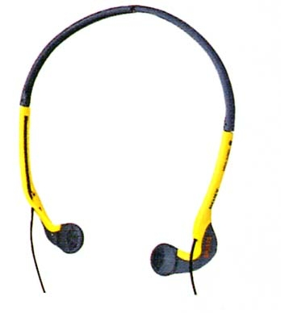

MDR-A30SP

■価格 3,300円■型式 オープンエアダイナミック型■振動板 16�oドーム型■インピーダンス 16Ω■再生周波数帯域 10-23,000Hz■許容入力 50mW■感度 108ｄB/mW■コード 0.5ｍ OFCリッツ線 ステレオミニプラグ■重量 16g（コード含まず）■発売 1996年7月■販売終了 ■備考 折り畳み式、防滴仕様 0.5mのマイクロプラグコードのMDR-A30ML/A30Gあり
ソニーのインデックスへ